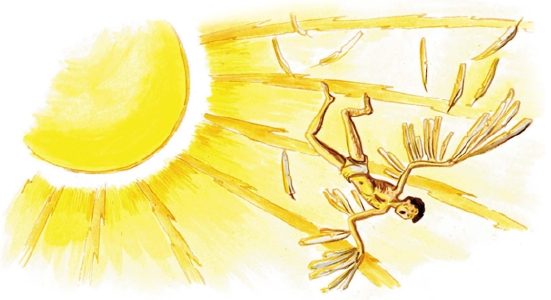

DAEDALVS ET ICARVS
I
Quīntus: “Nōnne rēx Mīnōs Thēseum cum Ariadnā fugientem persecūtus est?”
Syra: “Certē rēx eōs persequī coepit, sed nāvis Thēseī nimis celeris fuit. Mīnōs, quamquam celeriter nāvigāvit, nōn tam celer fuit quam Thēseus neque eum cōnsequī potuit. Tum rēx īrātus cēpit Daedalum, quī fīlum cōnfēcerat et Ariadnae dederat, eumque in labyrinthum inclūdī iussit ūnā cum eius Īcarō fīliō; vērum pater et fīlius mīrābilī modō ē labyrinthō fūgērunt. Crās tibi nārrābō dē fugā eōrum, hodiē plūs temporis ad nārrandum nōn habeō: iam hōram cōnsūmpsī in nārrandō.”
Quīntus: “Neque tempus melius cōnsūmere potuistī! Nōn oportet in mediā fābulā fīnem nārrandī facere. Quoniam maiōrem fābulae partem iam nārrāvistī, partem reliquam quoque nārrāre dēbēs. Ego parātus sum ad audiendum.”
Ad hoc Syra “Ergō” inquit, “quoniam tam cupidus es audiendī, reliquam fābulam tibi nārrābō: “Daedalus in labyrinthō inclūsus cum fīliō suō intrā mūrōs errābat nec exitum invenīre poterat, etsī ipse labyrinthum aedificāverat. Quoniam igitur aliae viae clausae erant, ille vir audāx per āera effugere cōnstituit. Īcarus autem, quī cōnsilium patris ignōrābat, humī cōnsēdit et “Fessus sum,” inquit, “ambulandō in hōc carcere, quem ipse nōbīs aedificāvistī, pater. Ipsī per nōs hinc effugere nōn possumus, neque quisquam nōs in fugiendō iuvāre poterit, ut Thēseum iūvit Ariadna. Haud longum tempus nōbīs reliquum est ad vīvendum, nam cibus noster paene cōnsūmptus est. Ego iam paene mortuus sum. Nisi diī nōs iuvābunt, numquam vīvī hinc ēgrediēmur. Ō diī bonī, auxilium ferte nōbīs!”
II
“Daedalus vērō ‘Quid iuvat deōs invocāre,’ inquit, ‘dum hīc quiētus sedēs? Quī ipse sē iuvāre nōn vult, auxilium deōrum nōn meret. At nōlī timēre! Ego cōnsilium fugae iam excōgitāvī. Etsī clausae sunt aliae viae, ūna via nōbīs patet ad fugiendum. Intuēre illam aquilam quae in magnum orbem circum carcerem nostrum volat! Quis est tam līber quam avis quae trāns montēs, vallēs, flūmina, maria volāre potest! Quīn avēs caelī imitāmur? Mīnōs, quī terrae marīque imperat, dominus āeris nōn est: per āera hinc ēvolābimus! Hoc est cōnsilium meum. Nēmō nōs volantēs persequī poterit.’ ‘Ego quidem studiōsus sum volandī,’ inquit Īcarus, ‘sed ālae necessāriae sunt ad volandum. Quoniam dī nōbīs ālās nōn dedērunt, volāre nōn possumus. Hominēs sumus, nōn avēs. Nēmō nisi deus nātūram suam mūtāre potest. Avēs nātūrā volāre possunt, hominēs nōn item.’ Tum Daedalus ‘Quid ego facere nōn possum?’ inquit. ‘Profectō arte meā ipsa nātūra mūtārī potest. Multās rēs mīrābilēs iam cōnfēcī, quae artem meam omnibus dēmōnstrant, nōn sōlum aedificia magnifica, ut hunc labyrinthum, vērum etiam signa quae sē ipsa movēre possunt tamquam hominēs vīvī. Ālās quoque cōnficere possum, quamquam opus haud facile est.’ ‘Audāx quidem est cōnsilium tuum,’ inquit Īcarus, ‘sed omne cōnsilium fugiendī mē dēlectat, ac tū id quod semel excōgitāvistī perficere solēs.’ ‘Certē cōnsilium meum perficiam,’ inquit pater. ‘Ecce omnia habeō quae necessāria sunt ad hoc opus: pennās, cēram, ignem. Igne cēram molliam, cērā mollī pennās iungam et in lacertīs fīgam.’
“Daedalus igitur arte mīrābilī sibi et fīliō suō ālās ingentēs cōnfēcit ex pennīs, quās cērā iūnxit et in lacertīs fīxit. Postquam fīnem operis fēcit, ‘Opus iam perfectum est,’ inquit. ‘Ecce exemplum artis meae novissimum. Avēs quidem nōn sumus, sed avēs imitābimur in volandō. Ventō celerius trāns mare volābimus; nūlla avis nōs cōnsequī poterit.’
“Īcarus studiōsus volandī ālās hūc illūc mōvit, nec sē suprā humum levāre potuit. ‘Ālae mē sustinēre nōn possunt,’ inquit. ‘Tū docē mē volāre!’ Statim Daedalus sē ālīs levāvit et ‘Nisi ālās rēctē movēs,’ inquit, ‘volāre nōn potes. Imitāre mē! Haud difficile est ars volandī. Movē ālās sūrsum deorsum hōc modō!’ Ita pater fīlium suum artem volandī docuit tamquam avis pullōs suōs. Tum, puerum ōsculātus, ‘Parātī sumus ad volandum,’ inquit, ‘sed prius hoc tē moneō: volā post mē in mediō āere inter caelum et terram, nam sī in īnfimō āere prope mare volābis, pennae ūmidae fīent; sīn volābis in summō āere prope caelum, ignis sōlis cēram molliet atque pennās ūret. Nōlī nimis audāx esse in volandō! Cautus estō, mī fīlī! Iam sequere mē! Carcerem nostrum effugimus — līberī sumus!’
III
“Haec verba locūtus Daedalus cum fīliō sūrsum ē labyrinthō ēvolāvit, neque quisquam fugam eōrum animadvertit nisi aliquī pāstor, quī forte suspiciēns eōs tamquam magnās avēs volantēs vīdit ac deōs esse arbitrātus est. Mox pater et fīlius Crētam relīquērunt, neque vērō rēctā viā Athēnās in patriam suam volāvērunt, sed, novā lībertāte dēlectātī, in magnum orbem suprā mare Aegaeum volāre coepērunt. Īcarus dēspiciēns multitūdinem īnsulārum mīrātus est: ‘Ō, quot parvae īnsulae in marī ingentī sunt!’ Daedalus vērō ‘Illae īnsulae,’ inquit, ‘haud parvae sunt, quamquam parvae esse videntur. Certē Mēlos īnsula, quae īnfrā nōs est, nōn tam parva est quam tibi vidētur.’ Īcarus: ‘Sed illa īnsula quae nōbīs ā sinistrā est multō maior esse mihi vidētur. Quae est illa īnsula?’ Daedalus: ‘Peloponnēsus est, Graeciae pars, nec vērō īnsula est, sed paenīnsula, nam Peloponnēsus terrā angustā, quae Isthmus vocātur, cum reliquā Graeciā coniungitur. Prope Isthmum sita est Corinthus, urbs pulcherrima, nec procul absunt Athēnae, patria nostra.’ ‘Sī altius volābimus, nōn sōlum Graeciam, sed paene tōtum orbem terrārum spectābimus,’ inquit puer temerārius atque etiam altius sē levāvit. Illinc nōn sōlum magnās Eurōpae et Asiae partēs dēspiciēbat mīrāns, vērum etiam ōram Āfricae procul cernēbat, deinde suprā sē sōlem in caelō serēnō lūcentem suspexit. Statim puer, cupidus sōlem propius aspicendī, quamquam pater eum monuerat, in summum caelum ascendit...”
Hīc Quīntus, quī exitum fābulae studiōsē exspectat, interrogat: “Quid tum accidit?”

Syra: “Tum factum est id quod necesse erat accidere: ignis sōlis propinquī cēram, quā pennae iūnctae et fīxae erant, mollīvit et pennās ussit. Puer territus, lacertōs nūdōs quatien̄s, in mare cecidit ac mersus est, neque pater eī auxilium ferre potuit. Ea maris Aegaeī pars in quā Īcarus mersus est ā nōmine eius ‘mare Īcarium’ appellātur. Item īnsula propinqua, in cuius lītore corpus puerī inventum est, etiam nunc ‘Īcaria’ vocātur.”
“Ecce omnem fābulam habēs dē puerō temerāriō quī lībertātem quaerēns mortem invēnit. Iam tempus dormiendī est. Nōnne fessus es longās fābulās audiendō?”
Quīntus caput quatit et “Nōn sum fessus, nec illa fābula longa esse mihi vidētur. Ex omnibus fābulīs haec dē cāsū Īcarī mē maximē dēlectat, etiam magis quam illa dē fīliō Sōlis, quī currum patris regere cōnātus item dē summō caelō cecidit, quod ab orbe sōlis stultē aberrāverat. Semper valdē dēlector tālēs fābulās audiendō.”
Syra: “Ego nōn minus dēlector nārrandō illās fābulās, nōn modo quod ipsae per sē pulcherrimae esse mihi videntur, sed etiam quia exitūs fābulārum hominēs temerāriōs optimē monent. Tālis enim est hominum nātūra, et quidem maximē puerōrum. Nōn sōlum dēlectandī causā, vērum etiam monendī causā nārrātur fābula dē fīliō Daedalī, nam quod illī puerō accidit, idem omnī puerō accidere poterit, nisi patrī suō pāret. Nōlī Īcarum imitārī, mī Quīnte! Semper cautus estō! Vērum haud necesse est tē ā mē monērī post id quod herī tibi accidit. Certē ille cāsus tuus melius tē monet quam ūlla fābula!”
Hīs verbīs puerō monitō, Syra tandem nārrandī fīnem facit. Neque Quīntus eam abeuntem revocat, sed in lectō recumbit oculōsque claudit. Mox puer in somnīs sibi vidētur ālīs ōrnātus trāns montēs et flūmina volāre.
* * *
GRAMMATICA LATINA
Gerundium
Hōrā in nārrandō cōnsūmptā, Syra plūs temporis ad nārrandum nōn habet et fīnem facit nārrandī.
‘Nārrandum’ est gerundium, quod pōnitur in locō īnfīnītīvī et sīc dēclīnātur: accūsātīvus -ndum, genetīvus -ndī, ablātīvus (et datīvus) -ndō.
Exempla:
Ovidius, semper parātus ad amandum, librum dē amandō scrīpsit, quī appellātur “Ars amandī”.
Magister, quī artem docendī scit, parātus est ad docendum. Magister ipse discit aliōs docendō.
Industriī estōte in scrībendō, discipulī! Tempus scrībendī est. Estne parātī ad scrībendum?
Iam tempus dormiendī est, sed Quīntus nōn est fessus audiendō neque parātus ad dormiendum.
Scrībere scrībendō, dīcendō dīcere discēs.
* * *
AD CAPITVLVM